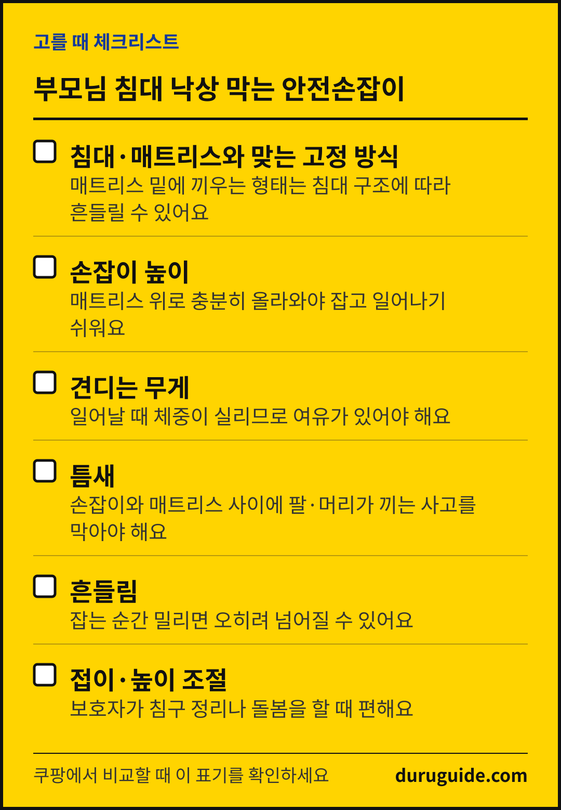

부모님 침대 낙상 막는 안전손잡이, 설치 전 확인할 것
안 사도 되는 경우
일어나는 순서를 바꾸고 침대 높이와 동선을 정리한 뒤 무언가를 붙잡지 않고도 일어나실 수 있다면 아직 손잡이는 없어도 돼요.
이런 상황이죠
밤에 화장실에 가려고 일어나시다가 침대 모서리에서 휘청하셨다는 이야기를 듣고 덜컥하셨을 거예요. 부모님이 침대에서 일어나 앉을 때 이불이나 매트리스 끝을 짚고 힘겹게 몸을 일으키시거나, 자다가 몸을 뒤척이다 침대 가장자리로 밀려나 계신 걸 본 적이 있다면 침대 옆 손잡이를 고민할 때입니다.
낙상은 대부분 화장실·침대·욕실처럼 매일 오가는 곳에서 일어나요. 그중 침대는 하루에도 여러 번 눕고 일어나는 곳이라, 일어나는 동작 하나를 안정적으로 만들어 주는 것만으로도 부담이 꽤 줄어듭니다.
왜 생기나
나이가 들면 다리 근력과 균형 감각이 함께 떨어져서, 누운 자세에서 앉고 앉은 자세에서 서는 순간에 몸이 가장 불안정해져요. 특히 이런 경우에 위험이 커집니다.
- 잠에서 막 깨서 정신이 덜 든 상태로 바로 일어날 때
- 매트리스가 푹신해서 짚는 손이 꺼질 때
- 침대 높이가 낮거나 높아서 발이 바닥에 제대로 닿지 않을 때
- 입원 뒤 퇴원하셔서 근력이 일시적으로 떨어졌을 때
- 혈압약 등 복용 중이라 일어설 때 어지러움을 느끼실 때
손잡이는 이 '일어나는 순간'에 잡을 곳을 만들어 주는 도구예요. 다만 손잡이가 낙상을 완전히 막아 주는 것은 아니므로, 아래 방법과 함께 쓰시는 게 좋습니다.
사기 전에 먼저 해볼 것
- 일어나는 순서 바꾸기 — 눈을 뜨자마자 일어나지 말고 옆으로 돌아누운 뒤, 팔로 밀어 앉고, 걸터앉은 채 잠깐 숨을 고른 다음 일어나시도록 말씀드려 보세요.
- 침대 높이 확인 — 걸터앉았을 때 발바닥 전체가 바닥에 닿고 무릎이 대략 직각이 되는 높이가 일어나기 편합니다.
- 동선 정리 — 침대에서 화장실까지 가는 길의 전선·러그·문턱을 정리하고, 밤에는 발밑을 비추는 작은 조명을 켜 두세요.
- 침대 옆 가구 점검 — 서랍장이나 협탁을 짚고 일어나시는 경우가 많은데, 바퀴가 있거나 가벼운 가구는 밀려서 오히려 위험합니다.
이렇게 해도 일어나실 때 매번 무언가를 붙잡으셔야 한다면 손잡이가 필요한 상태라고 보시면 됩니다.
고를 때 체크리스트
| 확인할 것 | 왜 중요한가 | 확인 방법 |
|---|---|---|
| 침대·매트리스와 맞는 고정 방식 | 매트리스 밑에 끼우는 형태는 침대 구조에 따라 흔들릴 수 있어요 | 침대 프레임 형태(평상형·받침형)와 매트리스 두께를 재고 제품 설치 조건과 비교 |
| 손잡이 높이 | 매트리스 위로 충분히 올라와야 잡고 일어나기 쉬워요 | 매트리스 윗면 기준 손잡이 높이 표기 확인 |
| 견디는 무게 | 일어날 때 체중이 실리므로 여유가 있어야 해요 | 최대 사용 하중 표기, 사용자 체중과 비교 |
| 틈새 | 손잡이와 매트리스 사이에 팔·머리가 끼는 사고를 막아야 해요 | 설치 후 틈이 없도록 밀착되는지, 틈새 관련 안내가 있는지 확인 |
| 흔들림 | 잡는 순간 밀리면 오히려 넘어질 수 있어요 | 설치 뒤 체중을 실어 흔들림을 먼저 확인 |
| 접이·높이 조절 | 보호자가 침구 정리나 돌봄을 할 때 편해요 | 접이식인지, 잠금장치가 확실한지 |
장기요양등급이 있다면
부모님이 장기요양등급(1~5등급, 인지지원등급)을 받으셨다면 복지용구 급여로 일부 품목을 본인부담금만 내고 구입하거나 대여할 수 있어요. '안전손잡이'는 구입 품목에 들어 있지만, 침대 옆에 끼워 쓰는 형태가 급여 제품으로 등록돼 있는지는 제품마다 다르니 복지용구 사업소나 국민건강보험공단에 먼저 확인하세요. 거동이 많이 불편하시다면 사이드레일이 달린 수동·전동침대 대여가 더 맞을 수도 있습니다. 어르신 상태에 맞는 품목은 사업소 상담으로 함께 정하시는 게 안전해요.
추천 제품 찾기
위 체크리스트에서 우리 집 침대 구조와 매트리스 두께, 부모님 체중을 먼저 적어 두고 그 조건에 맞는 제품을 쿠팡에서 비교해 보세요. 설치 조건과 사용 하중이 상세히 적힌 제품을 고르시는 게 좋습니다. 현재 가격과 판매 상태는 쿠팡에서 확인해 주세요.

이 포스팅은 쿠팡 파트너스 활동의 일환으로, 이에 따른 일정액의 수수료를 제공받습니다.
이 콘텐츠는 토스쇼핑 쉐어링크 활동의 일환으로, 링크를 통한 구매가 발생하면 일정 수수료를 지급받습니다.